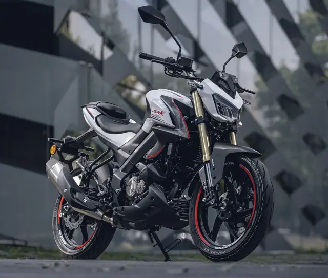
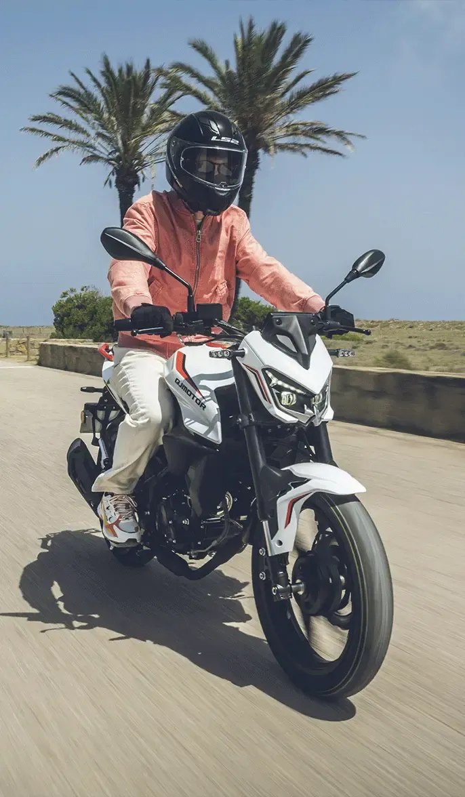
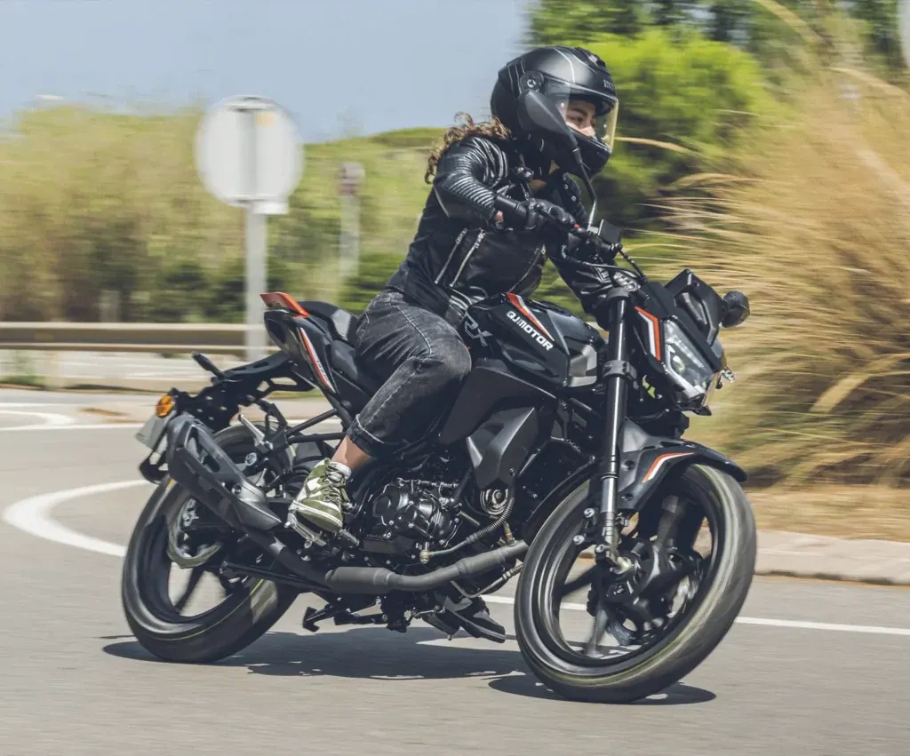
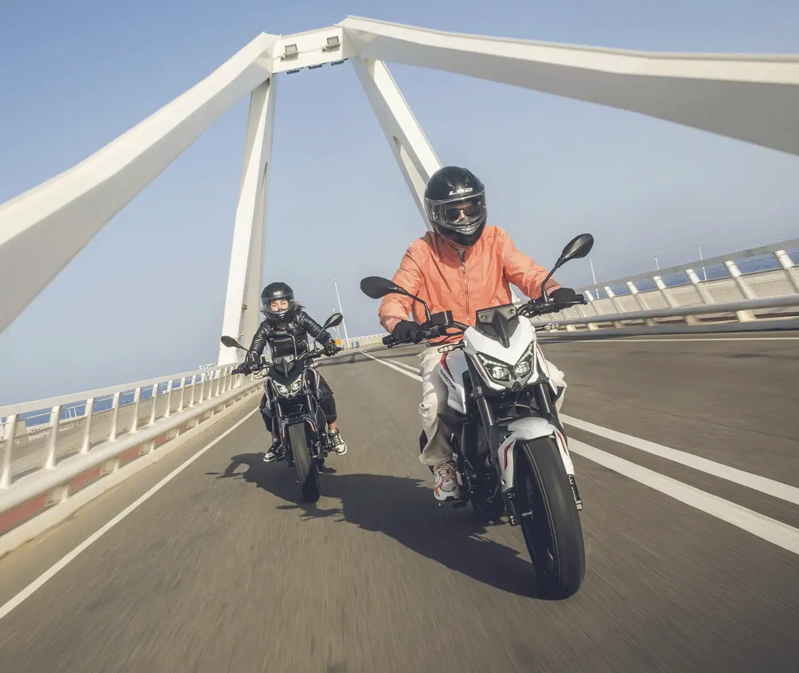

QJ Motor
SKR 125S
B·A1 125 cc · Street
Propuesta de OpsPilot para Expomoto Córdoba, en revisión. No es la web oficial: expomotocordoba.es
Inicio › Motos › QJ Motor › TRX 125
QJ Motor
MOTOR MONOCILÍNDRICO 125 cc DE 4 VÁLVULAS
Precio y financiación: te los damos al momento por teléfono (pendientes de publicar en la web).



con refrigeración por aire y aceite, con una potencia de 11,2 CV (8,2 kW) que entrega un par motor máximo de 10 Nm a 7.000 rpm contando con un sistema de inyección electrónica.
que proporciona todos los datos relevantes de forma clara, precisa e intuitiva.
en faros delanteros, intermitentes y piloto trasero. Óptima visibilidad en todo momento.
en rueda delantera y monoamortiguador regulable en precarga de muelle en rueda trasera.